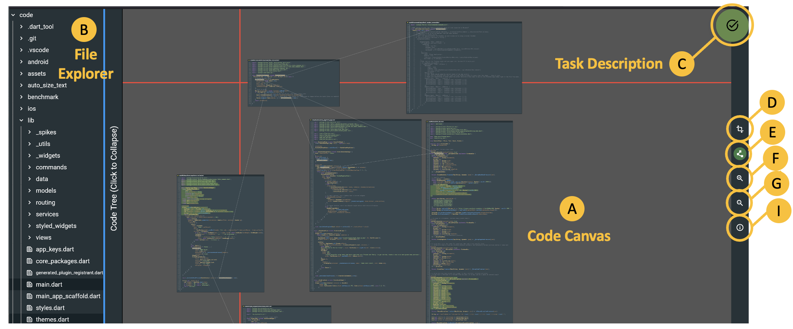
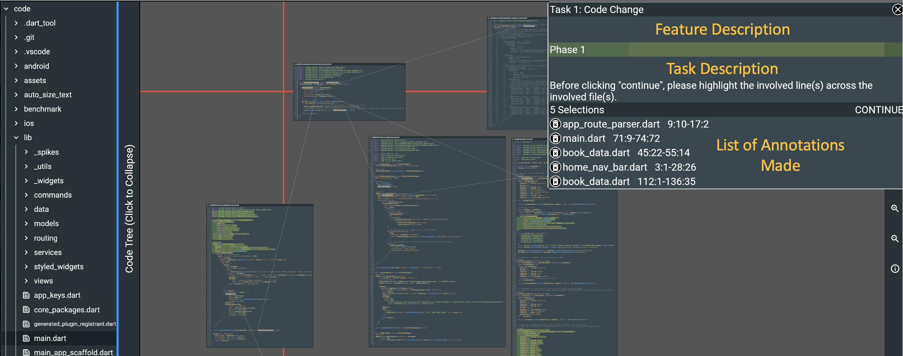
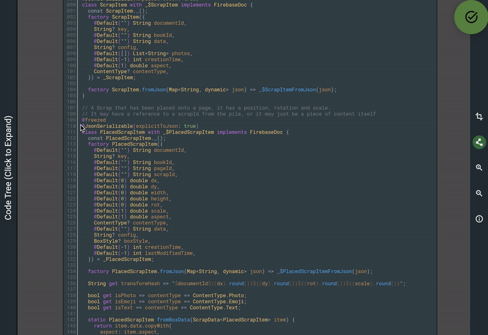
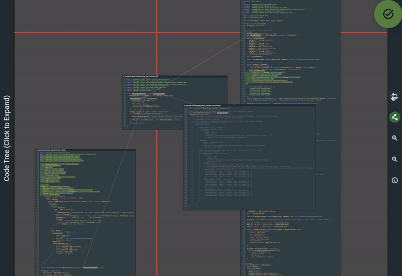
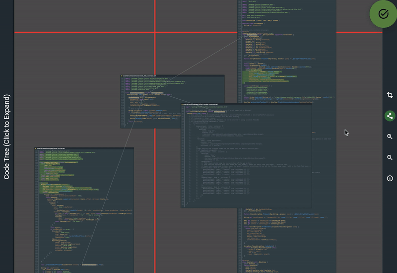

Code Documentation Tool Walkthrough
Overview:
Before we begin the experiment, we would like to familiarise you with the code documentation tool, which you will be interacting with to search through and annotate the source code of the Flutter Folio App. The main purpose of the tool is to enable developers to take notes (annotations) throughout their navigation of the code base, which they can return to at a future point.
The main view of the tool comprises the following components:
- (A) Code canvas: zoomable area, in which code files can be visualised and annotated, linked and arranged
- (B) File explorer: this collapsible view shows the project file tree. Clicking on a file in the file tree opens the file inside the code canvas. Dragging the blue edge resizes the file explorer view.
- (C) Task Description: show/hide task description and the list of annotations
- (D) Node-Move Mode: deactivates annotations and allows for free movement of the files inside the code canvas
- (E) View/hide edges: toggles the visualisation of links between files open in the code canvas
- (F) Zoom-in: zoom into the canvas
- (G) Zoom-out: zoom out of the canvas
- (I) Info: show tool controls

During the experiment, the tasks will be described under (C).By clicking on this button, you can view/hide the current task and the list of annotations you have made in the current phase.
You can also delete any annotations you do not want to submit for the corresponding phase.
Press "Continue" to proceed to the next task. This will submit your solution and you cannot go back to the previous task.

Features:
Open file in code canvas
To open a file in the code canvas, navigate to the file in question in the file explorer and click on the file.
Use trackpad or scrollwheel (press scrollwheel to drag) for movements on the canvas.
Zoom-in/zoom-out works
using scrollwheel+alt or scrollwheel + option ⌥ on mac.
Using the trackpad keep alt or option ⌥ pressed while moving your fingers over the trackpad to zoom in and out of the
canvas.

Annotate file
To make annotations to the file, simply select a code section.
Node-move mode
To avoid inadvertently making annotations while rearranging files on the canvas, turn on node-move mode (D) to move files freely.
When this mode is deactivated, you can reposition the files by dragging their top bar.

Go to definition
To view the file where an identifier is defined, simply click on it and choose "Go to definition". The file containig the definition will be opnend in the canvas.
A visible link will appear between the reference and the definition file
if links are currently shown.

Find all references
To open all references of an identifier, click on the identifier and choose "Find all references".
A list of all references in the code base will be shown. Click on a reference to open it in the canvas.

View / hide links
You can hide/show links between files in the canvas using the view/hide edges button (E).
